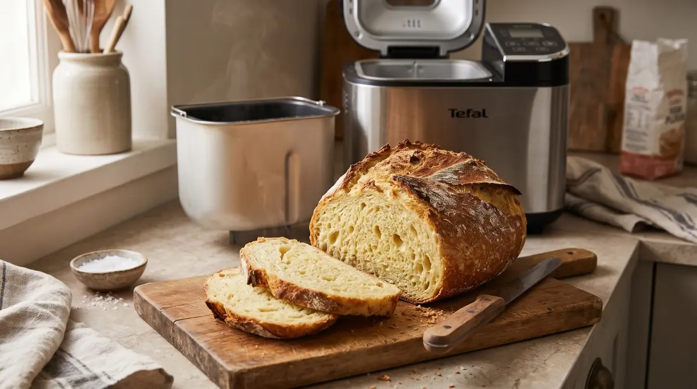

Potato Bread Recipe for the Bread Maker

Home
Description:
Fluffy potato bread — quick and easy to make in the bread maker.
Makes: 1 loaf (approx. 8–10 slices)
Ingredients
- 250ml water (alternatively milk or buttermilk)
- 450g wheat flour
- 200g mashed potatoes (cooked)
- 1 packet dry yeast
- 1 tsp salt
- 1 tbsp margarine
Preparation
Total time: 4h 30min | Prep time: 25-30min | Cooking/baking time: 3h | Resting time: 1h
- Peel and boil the potatoes for 15-20min until soft.
Mash them finely and let them cool to lukewarm.
- Pour the liquid (water, milk, or buttermilk) into the bread maker pan first.
- Add the flour, mashed potatoes, margarine, and salt.
- Add the dry yeast on top of the flour.
- Select the basic/standard white bread program (approx. 3 hours) and start the machine.
- Once baked, remove the loaf from the pan and let it cool completely.